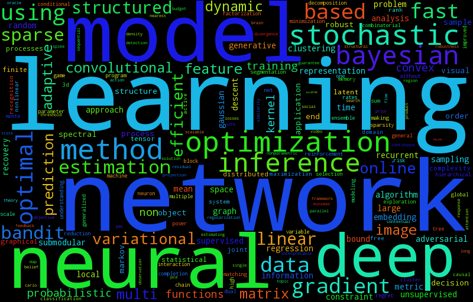
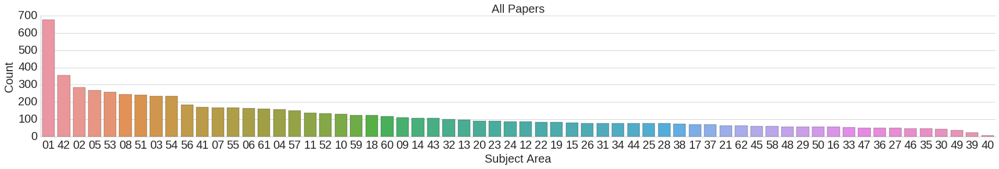

The Conference and Workshop on Neural Information Processing Systems (NIPS) is probably the biggest conference with machine learning / deep learning as a main topic. This year, about 6000 people attended it. My friend Marvin and I were supported by Begabtenstiftung Informatik Karlsruhe.
The complete program can be found in the Conference Book, but I would like to point out some of my highlights.
Hot Topics
To get an idea what NIPS 2016 was about, I generated a word cloud from the titles of the accepted papers:
{kind=link}

The organization team made something similar, but they had access to the information how the papers were tagged:
{kind=link}

(Image source: www.tml.cs.uni-tuebingen.de)
The top 10 topics were:
- 01: Deep Learning or Neural Networks
- 42: (Application) Computer Vision
- 02: Large Scale Learning and Big Data
- 05: Learning Theory
- 53: (Other) Optimization
- 08: Sparsity and Feature Selection
- 51: (Other) Classification
- 03: Convex Optimization
- 54: (Other) Probabilistic Models and Methods
- 56: (Other) Unsupervised Learning Methods
I would say the top five hot topics (first is hottest) are:
- GANs
- Reinforcement Learning: Look for "bandit" in the paper titles
- unsupervised learning
- alternative ways to train DNNs
- reducing the need for data (transfer learning, domain adaptation, semi-supervised learning)
GANs
Generative Adversarial Networks (short: GANs) were one hot topic at NIPS. The idea is to train two networks: A generator \(G\) and a discriminator \(D\). The generator creates content (e.g. images) and the discriminator has to decide if the content is of the natural distribution (the training set) or made by the generator.
An introduction can be found at blog.evjang.com
Noteworthy papers and ideas are:
- Learning What and Where to Draw
- InfoGAN: Get more control over properties of the generated content.
- How to Train a GAN? Tips and tricks to make GANs work
- Generative Visual Manipulation on the Natural Image Manifold: Allow interactive generation of images (see also: Reddit)
Applications of GANs are (according to Eric Jang):
- reinforcement learning: paper
- domain adaptation
- security ML
- compression
Bayesian Deep Learning
Combining deep learning with graphical models like CRFs / Markov Random Fields has been done for semantic segmentation for a while now. It seems like the combination of those two is called "bayesian deep learning". If you look for the keyword "variational" it seems to belong in this category.
I don't really know this area, so I leave it to Eric Jang to point out important papers.
Nuts and Bolts of ML
Andrew Ng gave a talk in which he summarized what he thinks are some of the most important topics when training machine learning systems. Most of it is probably also in his book Machine Learning Yearning or in his Coursera course.
Here are some of the things he talked about:
- When you design a speech recognition system, you can measure 3 types of errors: Human error, training set error and test set error. The difference between the human error and the training error is "avoidable error" (bias), the difference between training and test error is "variance".
- Human level performance is ambiguous: In a medical application, is an amateur, a doctor, an experienced doctor or a team of (experienced) doctors the "human level performance"?
- Role of an "AI Product Manager"
More Papers
Clustering:
Optimization:
- MetaGrad: Multiple Learning Rates in Online Learning
- Optimal Learning for Multi-pass Stochastic Gradient Methods
- Layer Normalization: A successor for Batch Normalization?
Theory:
- Deep Learning without Poor Local Minima: Local Minima are global minima in "typical" networks
- Matrix Completion has No Spurious Local Minimum
- Understanding the Effective Receptive Field in Deep Convolutional Neural Networks
Topology learning:
- Learning the Number of Neurons in Deep Networks
- From another talk. Most add nodes / edges over time from an initial seed network:
- 1960, Erdős & Rényi: Random graphs
- 1998, Watts & Strogatz: Small-world graph
- 1999, Barabási & Albert: Preferential attachment
- 1999, Kleinberg et al.: Copying model
- 2003, Vazquez et al.: Duplication-divergence
- 2007, Leskovec et al.: Forest fire
- 2008, Clauset et al.: Hierarchical random graphs
- 2010, Leskovec et al.: Kronecker graphs
- Network compression
- Swapout: Learning an ensemble of deep architectures
Analysis of ML models:
- Blind Attacks on Machine Learners
- Measuring Neural Net Robustness with Constraints: Measure robustness against adversarial examples
- Robustness of classifiers: from adversarial to random noise
- Unsupervised Risk Estimation Using Only Conditional Independence Structure
- Examples are not Enough, Learn to Criticize! Criticism for Interpretability (github)
- Identifying Unknown Unknowns in the Open World: Representations and Policies for Guided Exploration
Content creation:
Labeling:
- Active Learning from Imperfect Labelers
- Fundamental Limits of Budget-Fidelity Trade-off in Label Crowdsourcing
- Avoiding Imposters and Delinquents: Adversarial Crowdsourcing and Peer Prediction
Content based Image Retrieval (CBIR):
- Improved Deep Metric Learning with Multi-class N-pair Loss Objective
- Learning Deep Embeddings with Histogram Loss
- Local Similarity-Aware Deep Feature Embedding
- CliqueCNN: Deep Unsupervised Exemplar Learning
- What Makes Objects Similar: A Unified Multi-Metric Learning Approach
Misc:
- Learnable Visual Markers: Visual markers are something like barcodes
- Neurally-Guided Procedural Models: Amortized Inference for Procedural Graphics Programs using Neural Networks
- Universal Correspondence Network: Find semantically meaningful similar points in two images. For example, two frontal images of different humans, where the network finds eyes, nose, chin, lips in both images.
- Scene Recognition Demo
- TorontoCity: Seeing the World with a Million Eyes: A new benchmark dataset by Raquel Urtasun
- What makes ImageNet good for Transfer Learning? by Jacob Huh (UC Berkeley), Pulkit Agrawal (UC Berkeley), and Alexei Efros (UC Berkeley)
Lessons learned for conferences
- Bring a camera: The information comes very fast. Too fast to take notes, but you can shoot a photo of the slides. In fact, quite a lot of people do so.
- Shoot a photo of the first slide, so that you know what the talk was about when you look at your slides.
- If you give a talk / poster...
- ... let the first slide be there long enough, so that people can take a photo of it.
- ... or have a URL / the title of the paper on every single slide
- ... let every slide be visible long enough, so that people can take photos
- ... don't use QR-codes only, but also (shortened) URLs
- ... make it available online as PDF
- ... answer key questions: (1) Which problem did you tackle? (2) How did you test your results? (3) To what is your "solution" similar?
- As a session organizer...
- ... make sure there is a schedule at the door (outside)
- ... make sure the schedule is online
- ... make sure the schedule is changed everywhere, if it is actually changed
Miscellaneous
- Advances in Neural Information Processing Systems 29 (NIPS 2016) pre-proceedings
- Jobs
- NIPS Papers Kaggle Dataset
- blog.aylien.com: Highlights of NIPS 2016: Adversarial Learning, Meta-learning and more
- salon-des-refuses.org should contain papers which were refused, but are also of high quality. However, the website seems to be down.
- Martin Zinkevich: Rules of Machine Learning: Best Practices for ML Engineering
- Implementations for NIPS 2016 papers
- YouTube: